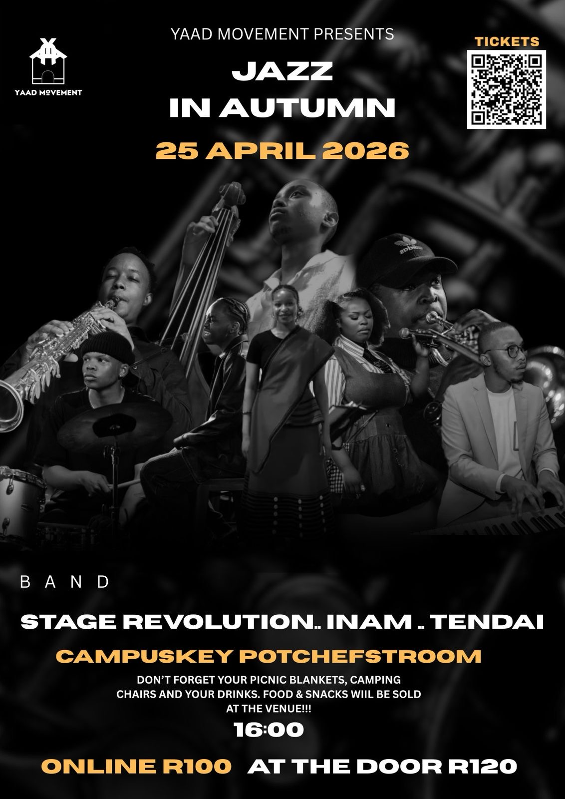

Winter Jam Sessions
July 26, 2025A night of music, unity, and vibes that brought the community together for an unforgettable experience.
Where dreams come alive through music
YAAD (Jamaican for home) is an event organising movement that aims to promote and advocate for LIVE MUSIC PERFORMANCES & ARTISTS. Here at YAAD, we aim to encourage people to dream, be bold, and be FREE!! We believe music has the power to heal and destroy, it just depends on how you use it and we chose to heal, build, and entertain. Your dreams are valid and everyone is welcome at YAAD!!
REMEMBER: DARE TO DREAM


YAAD Movement is not just an event organizer; we're a community dedicated to nurturing musical talent and creating spaces where artists can thrive. Founded with a passion for authentic live music experiences, we believe in the transformative power of music to unite communities and inspire change.
Every event we organize is carefully crafted to celebrate the rich tapestry of musical genres while providing a platform for both emerging and established artists to share their craft with appreciative audiences.


The Stage Revolution is an 8 piece Afro Jazz/Soul band from North West Potchefstroom. Our Objective is to create a community where Afro related music can thrive in Potchefstroom. We strongly believe in the power of healing through music and providing a sense of belonging for everyone. We are not just providing good music but we are also creating a music hub for everyone.

A diverse South African musician from Evaton in the Vaal, Lebo studied music in high school from grade 10, specializing in both Jazz and classical guitar along with classical baritone singing. Along with currently pursuing his Bachelor in Music at North-West University, Lebo is Head of Marketing and NPMS management, a bassist, and percussionist for the North-West University Symphony Orchestra (NWUSO). He is also the manager and a band member of the Stage Revolution Band.
Lebo started organizing events at just 16 years old with his first show "Teens Doing Things." His passion for music and logistics led to successful shows like The Afro Soul Session, Winter Jam Session, and The Heritage Picnic Show. Beyond being a musician, he's a philanthropist who hosted a fundraiser show at NWU Conservatory for the NWU School of Music.
A dedicated space for press features, published stories, and interview highlights.
Have questions, suggestions, or just want to say hi? We'd love to hear from you!
Or email us directly at Yaadmovement@gmail.com
Stay connected with us on social media: